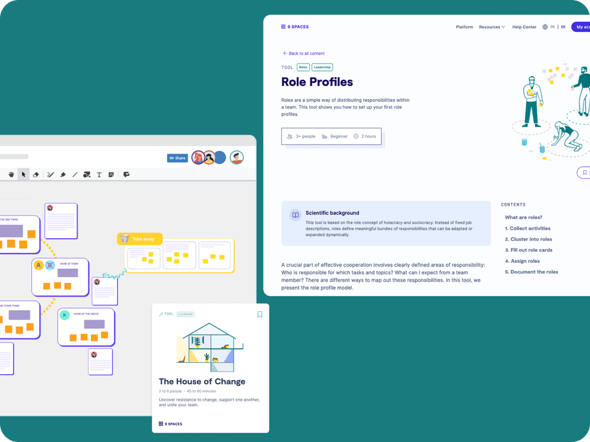

Business
5+ seats
Access for multiple team members within a tailored plan
Let’s be honest: who has time for endless paperwork and organisational chaos? With 9 Spaces, you bring structure to your workflows, strengthen teamwork, and get your business future-ready, leaving more time for what really matters.

This page is for anyone who wants less paperwork and more time for the craft itself.
Skills shortages, bureaucracy, rising costs: skilled trades face major challenges. 9 Spaces helps you optimise workflows and make your business future-ready.

Access for multiple team members within a tailored plan
Our team is happy to help you find the perfect solution for your skilled-trade business.